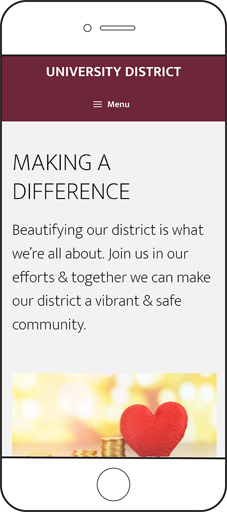

UNIVERSITY DISTRICT 2022
A wordpress website collaboration for the UALR University District Parnership to market the University District as a destination, to encourage development, and to promote the business and services within the area.
Stylistic choices were made to...
- My Role
- As the project manager, I was responsible for managing all project tasks, scheduling, and communication regarding our project. Later, my primary responsibility became mobile css development.
